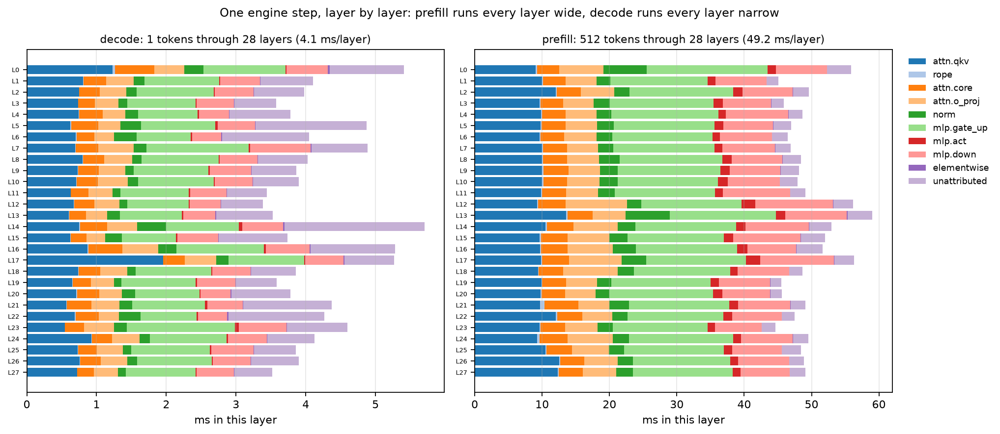
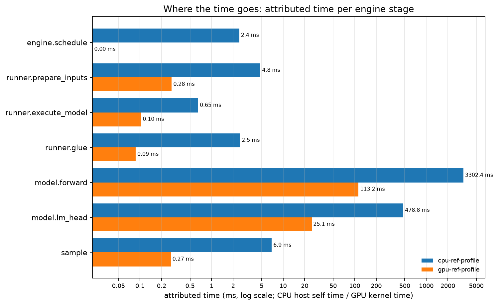
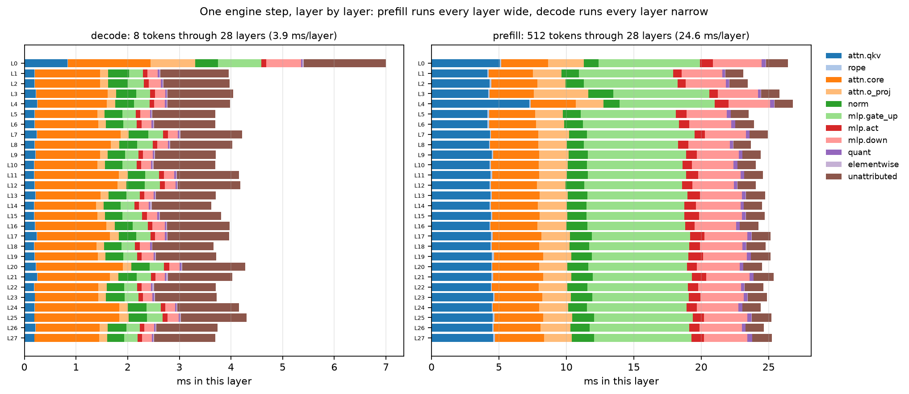
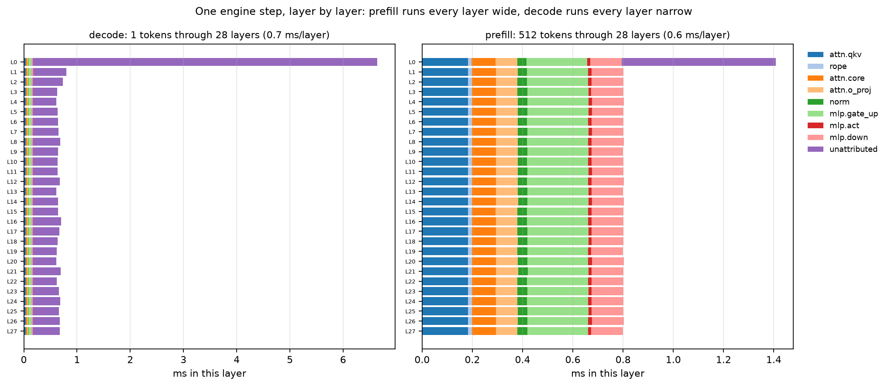
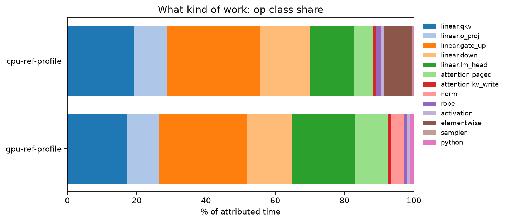
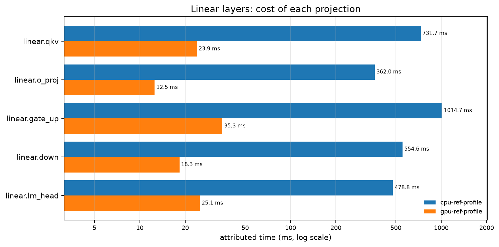

This page compares op-class costs from two eager traces. The main guide,
How vLLM serves a request, follows the request through vLLM's real
process layout and corrects several statements made here: the runs were not single-process,
the GPU runs step_with_batch_queue() with async scheduling, “launch-bound” applies
to eager mode only, and the slow first request was the trace being flushed, not profiler
start-up. See its corrections.
Reading a vLLM profile, one engine step at a time
Two traces of the same model, same prompt, same vLLM commit: one on a laptop CPU in
float32, one on an RTX 4060 in bfloat16. The interesting
question is not which is faster. It is what the work is made of on each device,
and which parts of vLLM's request path change shape when the device changes.
This page is the long version of the answer: the method, the request lifecycle, the two profiles, the comparison, and — the part that actually takes practice — how a raw trace becomes an attribution you can defend.
“27× faster” is a fact about one number, not about the work
A CPU-vs-GPU benchmark gives you a ratio. A profile gives you a decomposition — and the decomposition is what tells you where to spend effort, what will survive quantization, and which “optimization” is actually a measurement artefact.
The headline number in this study is that the CPU leg spends 3798.57 ms of host self time on the same attributed work that costs the GPU 138.97 ms of kernel time — a ratio of 27.3×. That number is true and almost useless on its own. It mixes three different things: the arithmetic (GEMMs), the memory traffic (weight streaming, KV cache), and the host-side fixed costs (dispatch, launching, scheduler). A ratio cannot tell those apart.
Once you decompose it, a much more interesting picture appears. The shape of the work is nearly identical on the two devices: the same five GEMMs per layer, in the same order, with the same relative importance. What changes is the multiplier — about 29× for the projections — and a small number of structural facts that no multiplier explains: RMSNorm exists as a fused kernel on the GPU but not on the CPU; decode is bandwidth-bound on both; and on the GPU, most of the host's per-layer span contains no device kernel at all, because the host is running ahead of the device.
What is the work made of?
Which op classes, which layers, which phases of the engine step. This is the part that transfers to other models and other hardware, because it is a statement about vLLM's request path, not about a particular chip.
What changes with the device?
Not just the constant. Fusion (RMSNorm), decomposition (elementwise), binding resource (weights vs KV vs launch rate), and what a “step” means when the host and the device are on different clocks.
Which claims survive?
Every number here has a provenance: which rule produced it, which trace, which caveat. The methodology section exists so you can reject a conclusion instead of trusting it.
How does attribution fail?
A trace does not label its own work. The most instructive part of this repo is the set of trace shapes that produced plausible, wrong answers — and the tests that now pin them.
Sections 2–4 are the method: what a step is, what makes the comparison honest, and how two incompatible traces are mapped into one vocabulary. Sections 5–8 are the evidence: one step opened up, then the CPU trace, the GPU trace, and the side-by-side. Section 9 is the craft — six attribution bugs that looked like findings. Section 10 reproduces everything; section 11 states what the study does not say.
How a request becomes an engine step
A vLLM profile is not a record of requests. It is a record of iterations. The engine pulls a batch from the scheduler, runs one forward pass, samples, updates state, and repeats. Everything you can attribute is nested inside that loop.
vllm serve runs two processes. The frontend owns the HTTP
boundary, tokenization, detokenization and streaming. The engine core
owns scheduling, KV-block bookkeeping, the model forward, and sampling. In a default
multiprocess deployment, /start_profile reaches only the worker — which is
why profiled runs set VLLM_ENABLE_V1_MULTIPROCESSING=0. One process, one
trace, scheduler and model together (R9).
frontend process
engine-core process
scheduler_output = self.scheduler.schedule(...) # 1. decide the batch
future = self.model_executor.execute_model( # 2. submit forward (non-blocking)
scheduler_output, non_block=True)
grammar_output = self.scheduler.get_grammar_bitmask(scheduler_output) # 3. overlaps 2
model_output = future.result() # 4. join
if model_output is None:
model_output = self.model_executor.sample_tokens(grammar_output) # 5. sample
engine_core_outputs = self.scheduler.update_from_output(...) # 6. bookkeepThe trace labels the scheduler's decisiontrust this first
vLLM wraps every forward pass in a user_annotation whose name is the
scheduler's own summary of the step, written by Worker.annotate_profile:
execute_context_<n_ctx_reqs>(<n_ctx_tokens>)_generation_<n_gen_reqs>(<n_gen_tokens>)
context means the request is still prefilling; generation
means it already has output tokens and this step gives it one more. So
execute_context_1(512)_generation_0(0) is a 512-token prefill, and
execute_context_0(0)_generation_1(1) is a one-token decode. This is not an
inference from timestamps: it is the scheduler telling you what it decided.
It also gives you a free correctness check. The token count must equal the GEMM's
M dimension. On the CPU leg the oneDNN ops record
Input Dims = [[M, K], [K, N], ...], and M matches the
annotation exactly. If they ever disagree, the trace is mislabelled and nothing
downstream is worth reading.
Sampling is not inside the step annotation. execute_model
stashes logits and returns None; the engine core then calls
sample_tokens as a separate RPC. The annotation therefore covers the model
forward and compute_logits, but not the sampler. Sampling lives in
the inter-step gap, next to schedule() and
update_from_output(). A step that looks like it is missing its sampler is
not broken — it is designed that way.
One decode step, phase by phaseCPU ref trace
| phase | what it is | ms | share | where |
|---|---|---|---|---|
| _update_states | batch state, input tensors | 0.10 | 0.1% | gpu_model_runner.py |
| _prepare_inputs | slot mapping, positions, block tables | 0.93 | 0.7% | gpu_model_runner.py |
| _model_forward | embedding → 28 layers → final norm | 117.2 | 83.2% | 28 decoder layers |
| compute_logits | lm_head: 1024 → 151,936 | 21.57 | 15.3% | qwen3.py |
| remainder of annotation | embedding, final norm, misc | 1.1 | 0.8% | — |
| execute_model | the annotation | 140.9 | 100% | user_annotation |
| sample_tokens | sampler, separate RPC — outside the annotation | 1.51 | — | gap |
| schedule | pick requests, allocate KV | 0.46 | — | scheduler.py |
| update_from_output | append token, stop checks, free blocks | 0.19 | — | scheduler.py |
Two numbers dominate and they are not the ones people expect. The forward is 83% of the
step, and the vocabulary projection is 15–17% — more than the entire
scheduler, sampler and input preparation combined. That is a property of this model:
lm_head reads a 1024 × 151,936 weight matrix every step, whether the batch
is 1 row or 512. On the CPU in fp32 that is a 622 MB read, so it is a bandwidth
floor, not arithmetic. Expect it in any Qwen3-0.6B profile; if it is absent, suspect the
trace.
The same table on the GPU has the same columns but different meanings:
forward is a host span of about 18–25 ms per step, while the
step's device kernels sum to 6.05 ms. The host is enqueueing
work faster than the device drains it. That single asymmetry is the subject of section 7.
The step is the same; the batch is not. In the separate INT8 conc8 run,
eight 512-token prompts are admitted together. With max_num_batched_tokens=2048
they need three prefill steps (step 0 takes one request; step 1 packs 2047 context tokens
plus one decode token; step 2 finishes 1537), then the window settles into 8-row decodes.
The trace shows it directly: execute_context_4(2047)_generation_1(1) followed
by execute_context_0(0)_generation_8(8). Prefill and decode share a step
budget; they are not separate loops.
Ten rules that make the comparison honest
A CPU-vs-GPU comparison is easy to run and easy to get wrong. Each rule below closes a specific way the comparison can silently become a comparison of something else. The rules are conditions on the run, not on the analysis — by the time you are reading a chart, it is too late to fix them.
Same commit, verified not assumed
Both legs run 4ba787ec99 (v0.33.0). The harness records
git rev-parse HEAD and vllm.__version__. The CPU leg must
build from source (VLLM_TARGET_DEVICE=cpu); the GPU leg may use a wheel.
Device-optimal, with a reference run on each
CPU fp32 and INT8 W8A8; GPU bf16 and FP8 W8A8. Compare quantized-to-quantized and reference-to-reference. Never compare the CPU reference against the GPU quantized run and call the difference “the device”.
KV cache dtype held constant
Quantize weights and activations, not the cache. --kv-cache-dtype auto on
both legs. Otherwise the decode profile mixes two changes and the bandwidth story stops
being interpretable.
Identical load, identical tokens
GuideLLM 0.8.1, same data, same constraint, same profile on both legs. Token counts
are synthetic and exact, so prompt_tokens is never re-tuned per device.
Scenario ids are the single source of truth.
Same scheduler, or it is not the same scheduler
--max-model-len 2048 --max-num-seqs 16 on both. CPU pins
OMP_NUM_THREADS to the physical core count (14, from
lscpu, not nproc). Preemption counts are scraped; a non-zero
delta invalidates the run.
Profiled runs are separate and eager
--enforce-eager on every profiled run: CUDA graphs turn N launches into one
replay node and destroy op-level attribution. Throughput is measured separately, without
eager, and reported separately. Both numbers are published; they answer different questions.
Same model runner on both legs
v0.33 ships two runners. Triton is disabled on a CPU-only host, so auto-selection would
put the GPU on V2 and the CPU on V1. Both legs pin
VLLM_USE_V2_MODEL_RUNNER=0. Different runners are not comparable.
Fixtures before interpretation
Each scenario runs once warm (prefix cache, allocator) and then measured.
/reset_prefix_cache between runs so run N is not accelerated by run N−1.
Single process, bounded by iterations
VLLM_ENABLE_V1_MULTIPROCESSING=0, so the trace contains scheduler, runner
and model. /start_profile {"max_iterations": 20} caps by forward passes,
not wall clock — trace size independent of scenario duration, identical on both legs.
Every mean carries its n
GuideLLM computes metrics over completed requests only. Duration-bounded runs leave
requests incomplete at the window edge; request_totals is copied next to
every mean so the incomplete fraction is visible, not inferred. Read
benchmarks.json, not the console.
torch_profiler_record_shapes=true is off by default at v0.33.0 and costs
overhead, but without shapes every projection collapses into one linear
bucket — the analyzer cannot separate qkv, o_proj, gate_up, down or lm_head. It is on
identically on both legs, so the overhead is symmetric.
torch_profiler_with_stack=true (vLLM's default) is what provides the
python_function frames that the whole stage axis depends on. Both are
required for the taxonomy in section 4 to mean anything.
Anti-patterns this study deliberately avoids
- Comparing a GPU with CUDA graphs against a CPU without them, then attributing the gap to “kernel efficiency”.
- Comparing fp32 CPU against FP8 GPU and calling it a hardware comparison.
- Profiling a cold run: JIT, allocator growth, first-touch pages.
- Quoting a sweep number without the concurrency it came from.
- Reporting
torch.profilerper-op sums as wall time on an async device.
A profile is a measurement of a specific run under a specific set of conditions. The method's job is to make those conditions identical everywhere except the variable you are studying — here, the device.
Threats to validity, stated not hidden
Quantization asymmetry
INT8 W8A8 and FP8 E4M3 are different numerics with different hardware support. The study asks “how does each device spend its time when deployed the way you would deploy it”, not “which device is faster at identical arithmetic”. Numerical quality is not measured beyond a smoke check.
No AMX on this CPU
Alder Lake has AVX-VNNI but no AVX-512 and no AMX. The fast SGL INT8 path requires AMX, so INT8 linear falls back to oneDNN; bf16 is emulated, which is why the CPU reference is fp32. A Sapphire Rapids CPU would show a different INT8 profile.
Hybrid-core topology
P-cores and E-cores are not equivalent. OMP_NUM_THREADS fixes the count,
not which cores run. Record it, keep it fixed, do not “tune” it per run.
One run per point
No between-run error bars. The p95 columns are within-run distributions, not confidence intervals. A repeat of the INT8 sync point moved <1%; treat differences under a few percent as noise.
Host-specific ISA build
The CPU extension is compiled -march=native, so the wheel is valid only on
the build host. probe_isa.sh records what actually runs: the AVX2
.so is mapped, and oneDNN selects avx2_vnni for the INT8 GEMM.
Async device time
On GPU, host spans and device kernels are on different clocks. Summing per-op self time is not wall time. The analyzer reports device time and host time separately and never adds them.
Two traces, one vocabulary
A CPU trace and a CUDA trace do not share structure. If each is aggregated with its own natural grouping, you get two charts you cannot put next to each other. So both legs are mapped into one fixed vocabulary before anything is plotted.
Two orthogonal axes. Every row of the output CSVs carries both: the engine
stage answers “which part of vLLM is doing this”, and the op class
answers “what kind of work is it”. A row like linear.gate_up / model.forward
is the intersection of the two.
Axis A — engine stage
From python_function events, which exist on both devices because the same
Python code runs on both. The nearest enclosing frame decides the stage.
with_stack=True is what puts those frames in the trace.
Axis B — op class
From ATen op names and — when record_shapes is on — tensor shapes. The
sub-stage split inside model.forward is derived from shapes, not by
patching the model, because layers/linear.py is one frame used by every
projection.
| stage | frame match |
|---|---|
| frontend.tokenize | v1/engine/, entrypoints/, tokenizer frames |
| engine.schedule | v1/core/sched/scheduler.py · schedule |
| engine.kv_cache | kv_cache_manager.py, block_pool.py, kv_cache_utils.py |
| engine.postprocess | scheduler.py · update_from_output, _free_request |
| runner.prepare_inputs | model-runner file, function matching prepare_input |
| runner.execute_model | model-runner file, function matching execute_model |
| runner.glue | any other frame in a model-runner file |
| model.forward | vllm/model_executor/models/, layers/ |
| model.lm_head | shape rule — N = vocab_size (Axis B) |
| sample | v1/worker/*/sample/, cpu/sampler.py, v1/sample/ops/ |
| frontend.other | v1/engine/llm_engine.py, async_llm.py, output_processor.py |
| frontend.detokenize | v1/engine/detokenizer.py, tokenizer.decode |
| other | anything unmatched — reported, never silently dropped |
Unmatched time goes to other, not to the nearest plausible stage. If
other exceeds roughly 10%, the taxonomy is wrong for this commit and must be
fixed before drawing conclusions. Section 9's first two case studies are exactly this
alarm firing.
Shapes are the sub-stage keyQwen3-0.6B
Qwen3-0.6B: hidden 1024, 16 Q heads / 8 KV heads, head_dim 128, intermediate 3072, vocab 151,936, 28 layers, tied embeddings. Four fused projections per layer, plus the vocabulary head:
| K | N | op class | what it is |
|---|---|---|---|
| 1024 | 4096 | linear.qkv | fused Q/K/V — 2048 (Q) + 1024 (K) + 1024 (V) |
| 2048 | 1024 | linear.o_proj | attention output projection |
| 1024 | 6144 | linear.gate_up | fused gate + up |
| 3072 | 1024 | linear.down | down projection |
| 1024 | 151936 | linear.lm_head | vocabulary projection — also promotes the stage to model.lm_head |
The CPU leg emits no aten::linear at all. vLLM dispatches
the projection straight to its own kernel, and the recorded name is the dispatched op
(_C::onednn_mm, _C::onednn_scaled_mm, _C::sgl_gemm,
cutlass_scaled_mm, …). So two dims conventions coexist in the same study,
and the analyzer picks one from the op name instead of guessing:
| family | Input Dims layout | (K, N) |
|---|---|---|
| aten::linear | input (..., K), weight (N, K) | dims[0][-1], dims[1][0] |
| aten::mm · matmul · addmm | mat1 (..., M, K), mat2 (K, N); addmm puts the 1-D bias first | dims[-2][-1], dims[-1][-1] |
| onednn* · sgl_* · cutlass_* | out (..., N), input (..., K) | dims[1][-1], dims[0][-1] |
Parsing aten::mm like a linear weight (dims[1][0]) gives
(K, K), so every projection comes out square. The result is
linear[1024x1024]: plausible-looking, consistent, and completely wrong. That
is what an early GPU leg looked like before the rule was fixed. The case is pinned by
test_aten_mm_uses_the_mat2_layout, and section 9 tells the story.
A real int8 example from a rank0 trace: a fused QKV GEMM records as
_C::onednn_scaled_mm with
Input Dims = [[64, 4096], [64, 1024], [64, 1], [], [1, 4096], [], []].
Using the custom-kernel convention: out = [64, 4096] → N = 4096,
input = [64, 1024] → K = 1024, hence linear.qkv. Getting this
backwards silently relabels every projection, which is why the rule is unit-tested with
dims copied from a real trace.
Op classes that do not come from shapes are matched by name: attention.paged
(paged_attention, flash_fwd, cpu_attention_with_kv_cache, …),
attention.kv_write (reshape_and_cache, …),
norm (aten::rms_norm, *norm*),
rope, activation, quant, elementwise
(remaining aten:: pointwise ops), sampler, and python
(a frame with no ATen child — real interpreter overhead, not idle time).
What counts as attributed timeand which column
| trace | attributed events | column | meaning |
|---|---|---|---|
| CPU | cpu_op + user_annotation | self_ms | host self time — on a CPU, host time is wall time |
| GPU | device kernel, gpu_memcpy, gpu_memset, correlated to the launching op | device_ms | kernel duration — “where the FLOPs went” |
| GPU | host spans | host_ms | launch overhead and Python — “where the Python went” |
Bare python_function self time is deliberately excluded. In a
serving trace it is dominated by asyncio and queue waits: on an idle CPU int8 profile it
was about 51 s of “self time” against 2.2 s of actual op time. Including it
would turn every chart into a chart of waiting. The analyzer prints the excluded total
next to the attributed total, so the omission stays visible.
The two GPU columns are never added together. device_ms and
host_ms are different physical measurements on different clocks.
Twenty steps, layer by layer
The window is exactly one prefill step (512 context tokens) plus 19 decode steps, over 28 layers. Four serial requests of 512 prompt / 128 output tokens are driven, but the profiler stops at 20 iterations — so everything below is one request's prefill and the first 19 tokens of its decode.
Both legs use the same model, tokenizer, prompt text and iteration cap, so the scheduler shape of the window is identical. The CPU trace's window is 4.54 s; the GPU trace's is 0.49 s. Same 20 steps, same 512-token prefill, same 28 layers. That is the precondition for every comparison that follows.
| # | ctx req/tok | gen req/tok | tokens | state | prepare | forward | logits | sample | sched | post | step | gap |
|---|---|---|---|---|---|---|---|---|---|---|---|---|
| 0 | 1/512 | 0/0 | 512 | 0.47 | 0.97 | 1386.2 | 24.38 | 1.58 | 0.87 | 0.56 | 1413.1 | 3.69 |
| 1 | 0/0 | 1/1 | 1 | 0.10 | 0.93 | 117.2 | 21.57 | 1.51 | 0.46 | 0.19 | 140.9 | 2.66 |
| 2 | 0/0 | 1/1 | 1 | 0.08 | 1.16 | 138.1 | 23.14 | 0.70 | 0.50 | 0.19 | 164.1 | 1.69 |
| 3 | 0/0 | 1/1 | 1 | 0.09 | 0.85 | 117.5 | 23.72 | 0.78 | 0.41 | 0.19 | 143.1 | 1.69 |
| 4 | 0/0 | 1/1 | 1 | 0.07 | 0.91 | 111.3 | 24.28 | 0.67 | 0.43 | 0.20 | 137.7 | 1.63 |
| 5 | 0/0 | 1/1 | 1 | 0.10 | 0.94 | 109.8 | 24.89 | 0.63 | 0.39 | 0.17 | 136.7 | 1.45 |
| 6 | 0/0 | 1/1 | 1 | 0.07 | 0.91 | 118.6 | 24.44 | 0.63 | 0.39 | 0.17 | 144.9 | 1.47 |
| 7 | 0/0 | 1/1 | 1 | 0.09 | 1.18 | 117.8 | 25.94 | 0.70 | 0.46 | 0.20 | 146.2 | 1.67 |
| 8 | 0/0 | 1/1 | 1 | 0.08 | 0.96 | 112.9 | 25.46 | 0.76 | 0.45 | 0.18 | 140.3 | 1.77 |
| 9 | 0/0 | 1/1 | 1 | 0.10 | 1.04 | 114.2 | 21.97 | 1.04 | 0.45 | 0.18 | 138.4 | 2.11 |
| 10 | 0/0 | 1/1 | 1 | 0.08 | 1.36 | 127.0 | 23.29 | 0.86 | 0.54 | 0.22 | 153.1 | 2.00 |
| 11 | 0/0 | 1/1 | 1 | 0.09 | 0.93 | 123.5 | 25.78 | 0.71 | 0.51 | 0.21 | 151.3 | 1.77 |
| 12 | 0/0 | 1/1 | 1 | 0.09 | 1.13 | 166.0 | 30.82 | 0.73 | 0.41 | 0.18 | 199.3 | 1.64 |
| 13 | 0/0 | 1/1 | 1 | 0.08 | 1.35 | 149.1 | 23.61 | 0.70 | 0.51 | 0.18 | 175.2 | 1.73 |
| 14 | 0/0 | 1/1 | 1 | 0.11 | 1.38 | 171.7 | 21.18 | 0.72 | 0.53 | 0.21 | 195.7 | 1.79 |
| 15 | 0/0 | 1/1 | 1 | 0.07 | 1.07 | 162.0 | 24.48 | 0.70 | 0.52 | 0.22 | 189.2 | 1.92 |
| 16 | 0/0 | 1/1 | 1 | 0.09 | 1.22 | 180.6 | 22.56 | 0.74 | 0.54 | 0.19 | 205.4 | 1.93 |
| 17 | 0/0 | 1/1 | 1 | 0.08 | 1.13 | 127.3 | 22.45 | 0.71 | 0.58 | 0.21 | 151.9 | 1.96 |
| 18 | 0/0 | 1/1 | 1 | 0.08 | 1.14 | 124.5 | 23.98 | 0.62 | 0.51 | 0.20 | 150.6 | 1.77 |
| 19 | 0/0 | 1/1 | 1 | 0.08 | 1.11 | 124.4 | 24.08 | 0.00 | 0.00 | 0.00 | 150.7 | 0.00 |
Read the table as a story. Step 0 is the prefill: 512 tokens, 1386 ms of forward.
Steps 1–19 are decodes: one token each, 110–180 ms of forward. The columns that do
not move are as informative as the one that does: state is
~0.08 ms, prepare ~1 ms, logits ~23 ms,
sample <1 ms, sched ~0.5 ms. The variability in
decode (steps 12, 14, 15 and 16 reach 166–181 ms) is laptop host noise, not model structure — which
is why the report quotes shares and per-projection ratios, and treats absolute CPU
milliseconds as ±15%.
Step 19 shows zero sample/schedule/postproc because those phases are measured in the gap between annotations, and there is no next annotation to bound it. The work happened; the table simply has no window in which to see it.
The same 28 layers, two batch shapes
| component | decode ms | share | prefill ms | share |
|---|---|---|---|---|
| mlp.gate_up | 1.05 | 25.4% | 14.93 | 30.4% |
| attn.qkv | 0.76 | 18.4% | 10.31 | 21.0% |
| mlp.down | 0.54 | 13.2% | 8.14 | 16.6% |
| attn.o_proj | 0.37 | 9.1% | 5.41 | 11.0% |
| attn.core (paged attn + KV write) | 0.30 | 7.3% | 3.73 | 7.6% |
| norm (4 per layer) | 0.18 | 4.4% | 2.64 | 5.4% |
| mlp.act (SiLU × gate) | 0.02 | 0.5% | 1.33 | 2.7% |
| rope | 0.01 | 0.2% | 0.17 | 0.4% |
| elementwise | 0.01 | 0.3% | 0.03 | 0.1% |
| unattributed | 0.87 | 21.2% | 2.48 | 5.0% |
| total | 4.12 | 100% | 49.19 | 100% |

The four projections are 66% of a decode layer and 79% of a prefill layer.
That is the invariant across devices. What changes is the residual: on the CPU,
unattributed is 21.2% of decode and 5.0% of prefill. It is layer-frame time
with no ATen op underneath — eager dispatch, _call_impl, hook checks, the
interpreter. It is a fixed per-op cost, so it is invisible during prefill and
large during decode. This is the CPU-specific finding that matters most for tuning: at
small batch, a fifth of what the CPU does per layer is not arithmetic.
Treat 21.2% as an upper bound: the profiler runs with
torch_profiler_with_stack=true (vLLM's default), which unwinds Python stacks
on every op. But the shape of the effect is real, and it is why CPU decode does
not get much faster when you quantize.
On the first decode step layer 0 takes 5.41 ms against
4.12 ms for the other 27 layers — a 1.31× penalty, with every GEMM
in it slower. By step 19 the ratio is 0.93×: gone. This is one-time, lazy construction of
the oneDNN primitive for the new M=1 shape, absorbed by whichever layer runs
first. step_report.py reports L0 separately and uses layers 1..N−1 for the
means, rather than letting a one-off inflate the average.
The prefill/decode asymmetry is the device-independent story. Prefill runs 512 tokens through each weight matrix in one GEMM, so every weight byte is reused 512 times. Decode runs one token, so the whole model is streamed from memory to multiply each weight once. For this model (~0.6B params with tied embeddings) that is ~2.4 GB per decode token in fp32 and ~1.2 GB in bf16. One layer holds 15.7 M weights — 15.7 MB as INT8, 63 MB as fp32 — read to produce a single row. That is why decode latency, not arithmetic, dominates single-stream serving.
The CPU profile: arithmetic that arrives as 90,960 small ops
On a CPU the host is the device, so a profiler's self time is wall time. That makes the CPU trace the easier one to learn on: there is no clock skew, no launch queue, no device idle hiding in the residual. What you see is what ran.
The attributed total is 3798.57 ms of host self time over 20 steps.
86.9% of it is inside model.forward, 12.6% is model.lm_head,
and everything else — input preparation, sampling, engine glue — is under 0.5%. The
profile of a small model on a CPU is almost entirely the model's own operators.

model.forward is 86.9% of CPU time
and 81.4% of GPU time; model.lm_head is 12.6% and 18.0%. The stage
vocabulary is the same on both sides — that is the point of section 4.
| op class | ms | share | why it is there |
|---|---|---|---|
| linear.gate_up | 1014.72 | 26.7% | fused gate+up GEMM, 1024 → 6144 |
| linear.qkv | 731.69 | 19.3% | fused Q/K/V GEMM, 1024 → 4096 |
| linear.down | 554.57 | 14.6% | down GEMM, 3072 → 1024 |
| linear.lm_head | 478.84 | 12.6% | vocabulary projection, 1024 → 151,936 |
| linear.o_proj | 362.05 | 9.5% | attention output GEMM, 2048 → 1024 |
| elementwise | 309.81 | 8.2% | 90,960 ATen ops: mul, pow, sum, div_, add, plus view/copy plumbing |
| attention.paged | 211.03 | 5.6% | cpu_attention_with_kv_cache |
| rope | 50.56 | 1.3% | rotary embedding |
| attention.kv_write | 36.61 | 1.0% | cpu_attn_reshape_and_cache |
| activation | 27.55 | 0.7% | SiLU × gate (SiLU is not fused into the GEMM on this path) |
| python | 15.10 | 0.4% | frames with no ATen child inside the model |
| sampler | 6.04 | 0.2% | argmax / softmax / top-k path |
| total | 3798.57 | 100% |
Two facts that explain most of the CPU profile
There is no norm row
vLLM's RMSNorm decomposes into aten::pow, aten::mul,
aten::mean, aten::div_. Four norms per layer across 20 steps
produce thousands of elementwise calls; with the unfused reshapes around attention, the
bucket totals 90,960 ops and 8.2% of CPU time. The GPU has a fused
kernel; the CPU does not.
lm_head is a bandwidth floor
478.84 ms over 20 calls = 23.94 ms per call, and it barely moves between a 512-row prefill (24.38 ms) and a 1-row decode (21–25 ms). In fp32 the weight is 1024 × 151,936 × 4 B = 622 MB read per step → about 26 GB/s. It is memory traffic, not arithmetic.
Those two facts interact with deployment decisions in opposite directions. Quantizing the
projections helps — that is most of the FLOPs — but it does not help lm_head
if the artifact leaves the head in fp32, and it does not remove the elementwise chain,
because the normalization and the reshapes around attention are not quantized. The INT8
run in this repo buys 1.9× on prefill but only 1.13× on per-layer decode, because the
decode layer is dominated by attention and norm — neither is quantized — plus the fixed
dispatch residual.
The attention share is small here (5.6%) and it is small for a structural reason: a 512-token context with one request means the KV cache is tiny. Attention gets large only when context × concurrency gets large. On this trace, decode is not attention-bound; it is weight-read-bound plus dispatch-bound.
The reference trace is one request at a time. The deployment-shaped CPU run — INT8 W8A8 at concurrency 8 — is the same engine and the same 28 layers, with a batch of 8 tokens per decode. The chart below is that run, and the contrast is instructive.

attn.core is now 35% (paged attention over eight
sequences' KV), and quant appears as its own slice. The
unattributed residual is still ~31%: batching did not make dispatch free, it
amortised it across eight rows. This is the deployment-shaped run, not the reference trace
used for the comparison.
A CPU flame graph is read left to right: horizontal width is duration, nesting is the call
stack, and the gaps between ATen ops are as important as the ops. Those gaps are
the unattributed 21.2% of a decode layer — the profiler's own stack unwind,
_call_impl, hook checks, and the Python interpreter moving between calls.
When someone says “the CPU is slow at small batch”, this is the part they mean, and it is
fixed by batching (more rows per dispatch) rather than by a faster GEMM.
The 3798.57 ms is attributed work, not the run's wall time and not a serving-throughput measurement. The profiled window also contains 27.9 s of bare Python self time — asyncio, queue waits, profiler bookkeeping — which is deliberately excluded. The analyzer prints that excluded total next to the attributed total so the gap stays visible.
The GPU profile: 6 milliseconds of work inside a 20-millisecond step
The same code runs. The same annotation wraps the same 28 layers. But on the GPU the columns stop meaning the same thing: the step you measure on the host is not the work the device does, and the difference is the finding.
The GPU leg's attributed device time is 138.97 ms: 24.08 ms for the 512-token prefill and 6.05 ms for each of the 19 decodes. The host-side annotation for those same decode steps is 19.6–26.0 ms. In other words, the host spends about 20 ms per step to get 6 ms of device work done. This is a small model on a fast device: the host cannot enqueue fast enough to keep the GPU busy, so the GPU idles between kernels.

unattributed) is 74.2% of that — each layer's host
span contains almost no kernel. Prefill bars are ~0.6 ms and almost entirely device
work: at 512 tokens the device is the bottleneck, so the launch gaps disappear into the
arithmetic. Note the different x scales; layer 0's first-decode bar is the 10× per-shape
setup.
| component | decode ms | share | prefill ms | share |
|---|---|---|---|---|
| mlp.gate_up | 0.05 | 8.1% | 0.24 | 30.3% |
| attn.qkv | 0.04 | 5.4% | 0.18 | 22.8% |
| mlp.down | 0.03 | 4.2% | 0.13 | 15.8% |
| attn.o_proj | 0.02 | 2.9% | 0.09 | 10.8% |
| attn.core | 0.02 | 3.5% | 0.10 | 11.9% |
| norm | 0.01 | 1.1% | 0.04 | 4.7% |
| mlp.act | 0.00 | 0.3% | 0.01 | 1.7% |
| rope | 0.00 | 0.3% | 0.02 | 1.9% |
| unattributed (host-only residual) | 0.49 | 74.2% | 0.00 | 0.0% |
The attributed rows are device time. The unattributed row is
host span with no device kernel under it — launch gaps and Python. It is
shown in the same column because that is where the time went, not because it is device
work. Percentages are shares of that mixed per-layer total. Do not add the two kinds of
milliseconds together and call the result “device time”; section 8 does the device-only
sums.
Even so, the shape is clear. The projections are the device work (0.05, 0.04, 0.03, 0.02 ms per layer), and 74.2% of the layer's host span contains no kernel at all. The host is enqueueing the next launch while the device is still draining the previous one. At 0.6B scale on a 4060, that is the dominant fact about decode: the GPU is not slow, it is underfed.
Kernel counts make the same point from the other side. Over 20 steps there are 2,260 fused RMSNorm kernels (four per layer, 2,240, plus 20 final norms), 1,092 attention kernels, and 560 calls of each projection (28 layers × 20 steps). Each of those is a launch; each launch is a host-side operation before it is a device-side one.
Two clocks: the lm_head example
The step table's logits column reads 0.06 ms on the GPU
— and that is a host span, not the cost of the vocabulary projection. The device time for
lm_head is 1.25 ms per call (25.06 ms over 20
steps). The host fires the kernel and moves on; the kernel finishes later. If you read the
0.06 as “lm_head is cheap on GPU”, you have read the wrong clock.
This is the single most important skill in reading an async trace: for every number, ask
which clock produced it. device_ms answers “where the FLOPs went”.
host_ms answers “where the Python went”. They are never summed, and a step's
host span can be longer or shorter than the device work inside it.
Decode streams ~1.2 GB of bf16 weights per token. 1.2 GB ÷ 6.05 ms ≈ 197 GB/s against a peak of roughly 272 GB/s on this part — the right order of magnitude for a bandwidth-bound decode. The CPU's 2.4 GB ÷ 116.6 ms ≈ 21 GB/s. A compute-bound explanation would predict the opposite ordering of prefill and decode; it does not fit.
What the GPU profile teaches that the CPU profile cannot
Fusion changes the vocabulary
RMSNorm is a real kernel on the GPU: 2,260 of them, 3.5% of device time. On the CPU it is a chain of elementwise ops, 8.2% of host time. Same math, different decomposition. The two percentages do not answer the same question.
Layer 0 costs 10×
First decode step: 6.64 ms for layer 0 against 0.66 ms for the other 27 — a
10.09× penalty. By step 19 it is 1.22×. This is first-launch cost at the new
M=1 shape, and it matters for time-to-first-token, not steady-state
throughput.
Attention's share rises by shrinking less
13.44 ms of GPU time, 9.7% of the total, against 211.03 ms on the CPU (5.6%). The gain is 15.7× — the smallest ratio in the table. Attention did not get more expensive; everything else got 29× cheaper.
Eager is a correctness condition
Kernel attribution works because kernels are matched to their launch point in order.
CUDA graphs replace N launches with one replay node, so every per-op number becomes a
number about cudaGraphLaunch. That is why R6 exists.
What the two profiles agree and disagree about
This is the whole comparison in one table, then six findings that the table alone cannot tell you. The rule for reading it: percentages answer “what share of this device's time”, ratios answer “how the same work scales”. Never use one as a proxy for the other.
| op class | cpu ms | cpu % | gpu ms | gpu % | cpu/gpu |
|---|---|---|---|---|---|
| linear.gate_up | 1014.72 | 26.7 | 35.34 | 25.4 | 28.7× |
| linear.qkv | 731.69 | 19.3 | 23.94 | 17.2 | 30.6× |
| linear.down | 554.57 | 14.6 | 18.32 | 13.2 | 30.3× |
| linear.lm_head | 478.84 | 12.6 | 25.06 | 18.0 | 19.1× |
| linear.o_proj | 362.05 | 9.5 | 12.55 | 9.0 | 28.9× |
| elementwise | 309.81 | 8.2 | — | — | — |
| attention.paged | 211.03 | 5.6 | 13.44 | 9.7 | 15.7× |
| rope | 50.56 | 1.3 | 1.46 | 1.1 | 34.5× |
| attention.kv_write | 36.61 | 1.0 | 1.29 | 0.9 | 28.3× |
| activation | 27.55 | 0.7 | 1.26 | 0.9 | 21.9× |
| norm | — | — | 4.93 | 3.5 | — |
| python (plumbing) | 15.10 | 0.4 | 1.37 | 1.0 | 11.0× |
| sampler | 6.04 | 0.2 | — | — | — |
| total | 3798.57 | 100 | 138.97 | 100 | 27.3× |
They are not missing data; the bucket does not exist on that leg.
elementwise is where the CPU's unfused RMSNorm and reshape plumbing land; on
the GPU those are fused kernels, counted under norm or inside attention.
sampler is a host-side op class and is not part of the device-kernel sum.
A dash means “different decomposition”, not “zero work”.

elementwise vs GPU norm.
Finding 1 — the device changes the cost by 29×, not the shape of the work
The projection mix is almost identical: gate_up is the largest on both
(26.7% / 25.4%), then qkv, down, o_proj, with lm_head as a separate stage.
The per-projection ratios cluster tightly at 28.7–30.6×. That is what you
expect if the work is the same arithmetic and the device is simply a different
multiplier: vLLM dispatches the same four GEMMs per layer either way, and nothing about
scheduling or batching moved.
The one projection that escapes the cluster is lm_head at
19.1×, and the reason is in its shape. It is the only GEMM whose output is
the vocabulary (151,936 wide): on the GPU it is bandwidth-bound, because each token streams
151936 × 1024 × 2 B ≈ 311 MB of weights, while the projections stream
12–25 MB each. The CPU's fp32 weights are twice the bytes, but its GEMMs are
compute-limited rather than bandwidth-limited, so it loses proportionally less on this one.

Finding 2 — decode is a weight-streaming problem; prefill is not
| CPU | GPU | |
|---|---|---|
| prefill forward (512 tokens) | 1386.2 ms | 24.1 ms |
| prefill per token | 2.71 ms | 0.047 ms |
| decode forward (1 token) | 116.6 ms | 6.05 ms |
| prefill / decode cost per token | 43× cheaper | 129× cheaper |
Both devices show the same structural fact: decoding one token costs far more than processing one prefill token. Prefill runs 512 tokens through each weight matrix in one GEMM, so every weight byte is reused 512 times; decode runs one token, so the whole model is streamed from memory to multiply each weight once.
The measured times are consistent with that. 1.2 GB / 6.05 ms ≈ 197 GB/s on the GPU (against ~272 GB/s peak on this part), and 2.4 GB / 116.6 ms ≈ 21 GB/s on the CPU. A compute-bound explanation would predict the opposite ordering of prefill and decode, so the asymmetry is the device-independent story — and it is why decode latency dominates single-stream serving.
Finding 3 — attention gets a bigger share on the GPU by getting smaller
attention.paged is 9.7% of GPU work and 5.6% of CPU work, which reads as “the
GPU spends more on attention”. It does not: 13.44 ms against 211.03 ms, a
15.7× gain — the smallest ratio in the table. The share rises because
everything else shrank by ~29× while attention shrank by ~16×, so attention's slice grew.
Per layer it is 7.3% of CPU decode time and 3.5% of GPU decode time.
This is the general trap with share tables on two devices, and the reason
compare_runs.py prints both columns. A share is a ratio to a moving
denominator; a ratio to the other device is the thing you actually want when asking “did
this get faster”.
Finding 4 — RMSNorm exists on the GPU and is arithmetic on the CPU
There is no norm row for the CPU at all, and 8.2% of CPU time sits in
elementwise — 90,960 ATen ops (aten::mul, aten::pow,
aten::sum, aten::div_, aten::add, plus view/slice/copy
plumbing). The GPU has fused _C::rms_norm and
_C::fused_add_rms_norm kernels — 2,260 of them, 3.5%.
The CPU path has no fused RMSNorm op, so the layer's normalization arrives as a chain of elementwise calls, and the equally unfused reshapes around attention add to the same bucket. Same math, different decomposition: the GPU's 3.5% and the CPU's 8.2% are not comparable as “how expensive is normalization”, only as “how much of each device's time lands in that bucket”.
Finding 5 — frontend and engine glue are noise on both, but not the same noise
Engine-core glue (sample + schedule + postproc) is 1.45 ms/step on the CPU and 0.64 ms/step on the GPU. Its share is higher on the GPU (3.1% vs 0.7%) because the model forward got so much cheaper; in absolute terms the GPU is still the faster engine core. Neither device is anywhere near frontend-bound: prompt handling and detokenization do not appear in the traced window at all.
The lesson is not “the scheduler is free”. It is that a fixed host cost looks negligible next to 116 ms of CPU math and looks like 3% next to 20 ms of GPU stepping. If you shrink the model or the batch further, that fixed cost keeps its milliseconds while its share grows.
Finding 6 — first-step, per-shape cost is real on both, and much bigger on the GPU
| L0 | other layers | ratio | |
|---|---|---|---|
| CPU | 5.41 ms | 4.12 ms | 1.31× |
| GPU | 6.64 ms | 0.66 ms | 10.09× |
By step 19 the gap is gone on the CPU (0.93×) and down to 1.22× on the GPU. This is
one-time per-shape setup at the new M=1 shape — on the CPU a oneDNN primitive
is built, on the GPU the first launch of these kernels happens. It is why
step_report.py excludes L0 from the layer means and reports it separately
instead of letting it inflate the average.
On the GPU it is also the difference between “28 layers cost 0.66 ms each” and “the first one costs ten times that”, which matters if you are looking at time-to-first-token rather than steady-state throughput.
27.3× is the ratio of two attributed work sums: CPU host self time and GPU kernel time. It is not a throughput ratio. The GPU leg is eager (no CUDA graphs), profiled with stack unwinding and shape recording, and driven by four serial requests. The honest claim is about composition: on this window, for this model, the GPU's device work is 27× smaller and made of the same parts.
Attribution is where profiles go wrong quietly
A trace does not label its own work. Every number on this page is the output of a rule about which frame, shape or launch a piece of time belongs to — and a wrong rule produces a plausible number that survives every sanity check except the one you did not run.
These six cases are not hypothetical. Each one produced a chart that looked reasonable and was wrong, and each is now pinned by a test. They are the best material in the repo for learning to read a profile, because the failure mode is always the same: the classifier does not crash, it just puts the time somewhere defensible.
38.5% of a GPU decode trace landed in other
launch matching
The GPU leg attributed less than two thirds of its device time. The rest was unmatched — the tell-tale sign that kernels had no enclosing launch op, not that the model did something unknown.
- What was wrong
- PyTorch records its own launches as
cuda_runtime, but cuBLAS — where every GEMM on the GPU leg comes from — launches through the driver API ascuda_driver(cuLaunchKernel). The launcher set did not includecuda_driver, so those kernels were orphaned. - Fix
- Treat
cuda_driver,Runtimeandgpu_user_annotationas launch points too. The kernel is then correlated to the op that requested it, and the 38.5% becomes the projections. - Lesson
otheris a health metric. If it exceeds ~10%, the taxonomy is wrong for this commit and must be fixed before drawing conclusions. The workload is never the explanation.- Pinned by
test_analyze_trace.py— a kernel launched bycuLaunchKernelmust resolve to itscuda_driverparent.
43.7 of 139.3 ms of decode device time was classed “python”
kernel naming
At M=1 every projection is a matrix-vector product, and cuBLAS emits a kernel
named internal::gemvx::kernel. The linear matcher looked for
gemm — which is not in the name. The single largest slice of decode time fell
through to python.
- What was wrong
- “GEMM” is a shape regime, not a word that appears in every kernel name. Decode changes the kernel family, so a matcher tuned on prefill silently mislabels steady state — the part you most want to measure.
- Fix
- Add
gemvto the linear markers, and let the enclosing host op's shape resolve which projection it is. The test uses the real mangled name:std::enable_if<!(false), void>::type internal::gemvx::kernel<int, int, ...>. - Lesson
- Op names encode the shape regime. When a bucket's share jumps between prefill and decode, check whether the kernel was renamed, not whether the work changed.
Every projection came out linear[1024x1024]
dims convention
The shapes were square, identical, and wrong. aten::mm had been parsed like
aten::linear: take dims[1][0] as K. For a matmul,
dims[1] is mat2 = (K, N), so that reads K twice.
- What was wrong
- Two layouts coexist.
linearstores weight as(N, K);mm/matmul/addmmstoremat1 (M, K),mat2 (K, N). The analyzer guessed one convention instead of selecting it from the op name. - Fix
- Use
dims[-2][-1]anddims[-1][-1]for the mm family (addmm puts the 1-D bias first). Pinned bytest_aten_mm_uses_the_mat2_layoutwith dims copied from a real trace. - Lesson
- The dangerous wrong answer is the plausible one. Unknown shapes fall back to
linear[KxN]and are visible; a square shape looks like a legitimate result and silences the fallback.
act_and_mul was invisible to the activation matcher
custom kernels
The GPU's SiLU × gate kernel is
vllm::act_and_mul_kernel<c10::BFloat16, ...>. It contains no
aten:: prefix, so a matcher built around aten::silu missed it,
and the work fell into elementwise or python.
- What was wrong
- vLLM's custom kernels do not follow ATen naming.
silu_and_mul,act_and_mulandswigluare the real spellings; matching only the ATen family covers the CPU path and not the GPU one. - Fix
- Match the vLLM spellings in the activation classifier, and test with the demangled kernel name from a real trace.
- Lesson
- When an op class exists on one device and vanishes on the other, first suspect the name space, then the math.
35.8% of prefill time was a bare linear with no layer
frame nesting
Kernels launched through vLLM's compile wrapper skip nn.Module.__call__.
There is no nn.Module: QKVParallelLinear frame above them, so module-based
attribution had nothing to grab, and a third of prefill collapsed into one unnamed
linear bucket.
- What was wrong
- The module frame is a convenience, not ground truth. The enclosing host op still carries the shape — and the shape is what identifies qkv vs o_proj vs gate_up.
- Fix
- Resolve the op class from the launching op's name and
Input Dims, not from the module frame.work_itemsuses the launcher's enclosing op for exactly this reason. - Lesson
- Instrumentation changes the call stack. Any wrapper that bypasses
__call__is invisible to hook-based tools; fall back to the op, which is always there.
The profiled prefill scheduled 480 tokens, not 512
workload verification
The annotation said execute_context_1(480)_generation_0(0) on a 512-token
prompt. Two 16-token blocks had survived the prefix-cache reset from the warmup request,
so the traced prefill was 6% smaller than the workload claimed.
- What was wrong
- The harness reset the prefix cache, but on the GPU the reset did not take effect. Warmup and measurement shared a prompt prefix; the cache did what it is designed to do.
- Fix
- The warmup now carries a unique preamble, and
profile_run.shreads the scheduler's context-token count back from the trace. A mismatch fails loudly instead of skewing the comparison by 6%. - Lesson
- Verify the annotation against the workload, not only against the GEMM. The token count matching
Mproves the trace is internally consistent; it does not prove it captured the run you intended.
Every case above is a silent misattribution, not a crash. The defence is procedural:
make the unmatched bucket loud (other), make unknown shapes visible
(linear[KxN]), test the classifier with names and dims copied from real
traces, and cross-check the annotation against the workload. The unit tests in
analysis/test_*.py exist because each of these rules was once a bug.
Every number here has a command behind it
The traces themselves are not committed — they are large and machine-specific. What is committed is the code that produces them, the merged CSV, and the figures. Three commands per leg, plus two analysis steps.
# CPU: builds vLLM from source with VLLM_TARGET_DEVICE=cpu (no CPU wheels exist)
DEVICE=cpu VARIANT=ref harness/profile_run.sh # -> traces/cpu-ref-profile/rank0*
# GPU: precompiled wheel is fine; enforce-eager + single process are set by the harness
DEVICE=gpu VARIANT=ref harness/profile_run.sh # -> traces/gpu-ref-profile/rank0*analysis/compare_runs.py \
--cpu results/cpu-ref-profile-stages.csv \
--gpu results/gpu-ref-profile-stages.csv \
--out results/profile-compare.csv
analysis/plot_compare.py \
results/cpu-ref-profile-stages.csv \
results/gpu-ref-profile-stages.csv --out figures/profilesource harness/env.sh
"$ANALYSIS_PY" analysis/step_report.py \
--trace "traces/cpu-ref-profile/rank0*.json.gz" \
--fig figures/fig-step-cpu-ref.png
"$ANALYSIS_PY" analysis/step_report.py \
--trace "traces/gpu-ref-profile/rank0*.json.gz" \
--fig figures/fig-step-gpu-ref.png
PROFILE_REQUESTS=4, PROFILE_PROMPT_TOKENS=512,
PROFILE_MAX_TOKENS=128, PROFILE_ITERS=20; one warmup request
with a unique preamble; ENFORCE_EAGER=1,
VLLM_ENABLE_V1_MULTIPROCESSING=0,
VLLM_USE_V2_MODEL_RUNNER=0, torch_profiler_record_shapes=true,
with_stack=true. GPU start is refused above 80 °C.
Where each claim comes from
| what | where |
|---|---|
| request path / two runners | docs/01-architecture.md |
| R1–R10, threats to validity | docs/02-methodology.md |
| stage + op-class taxonomy | docs/03-stage-taxonomy.md, analysis/stages.py |
| step tables, phases, conc8 | docs/04-request-lifecycle.md, analysis/step_report.py |
| comparison + six findings | docs/05-cpu-vs-gpu-profile.md, results/profile-compare.csv |
| kernel/launch correlation | analysis/analyze_trace.py |
| harness conditions | harness/profile_run.sh, harness/env.sh |
| classification tests | analysis/test_stages.py, analysis/test_analyze_trace.py |
| raw per-run CSVs | results/cpu-ref-profile-stages.csv, results/gpu-ref-profile-stages.csv |
The first request after start_profile takes 34.752 s on
the CPU and 14.225 s on the GPU, against 17.956–19.457 s and
1.383–1.400 s for the next three identical requests. That gap is profiler startup —
kineto initialization and frame symbolization — and it lands outside the annotated steps,
which is why the trace's per-step times look normal. It is a startup cost, not a model
latency.
What this study does not say
A profile is a measurement of a specific run under a specific set of conditions. The shape of the result generalises; the constants do not. These are the caveats that travel with every number on this page.
Different metrics
CPU self time and GPU kernel time both answer “what did this op cost on this device”, but they are not the same physical measurement. Do not read the 27.3× total as a serving-throughput ratio.
Different dtypes by design
fp32 vs bf16 means the GPU reads and multiplies half the bytes. The 29× projection ratio is arithmetic and precision, not silicon alone.
Profiled windows are distorted
Python self time in the window is 27.9 s (CPU) and 2.1 s (GPU) against 3.8 s / 0.14 s of attributed work: profiler overhead and asyncio waits live there. The taxonomy attributes work and prints the excluded share rather than hiding it.
Absolute CPU numbers drift
A repeat of the same CPU run gave 4.12 ms/layer here versus ~3.6 ms/layer earlier (≈15%), with projection shares moving under 1.5 points. Compare shares and per-projection ratios; treat absolute CPU milliseconds as ±15%.
The GPU window is one request
max_iterations=20 stops at the end of request 0's 19th decode step. The
remaining three requests are served but not recorded. Enough for per-step anatomy, which
repeats layer for layer; not a throughput sample.
One model, one host, one artifact
Qwen3-0.6B, 28 layers, hidden 1024; one laptop CPU without AMX; one 8 GB 4060; eager mode. A bigger model, longer context, higher concurrency, or a Sapphire Rapids CPU would move the constants — and some of the shares.
The most important limit is the one the method is built around: the profile is
composition, the benchmark is cost. Read the trace to learn what the work is made
of and which phase dominates. Read benchmarks.json for latency and
throughput. The trace's absolute decode step time is inflated by eager mode, stack
unwinding, shape recording and profiler bookkeeping; use it for shares, not for SLOs.
Glossary
- engine step
- One iteration of
EngineCore.step(): schedule a batch, run one forward, sample, update state. The unit the profiler records. - prefill / decode
- Prefill processes the prompt tokens in one wide GEMM; decode produces one token per sequence per step, at
M = batch size. - context / generation
- The annotation's two request classes: still prefilling vs already producing output tokens.
- annotation
- The
user_annotationvLLM writes around each forward, named with the scheduler's request and token counts. - attribution
- Assigning a measured duration to a stage and op class. On CPU, by enclosing Python frame and ATen op; on GPU, by correlating a kernel to its launch point.
- self time
- Time in an event excluding its children. On CPU this is wall time; on GPU per-op self time is not wall time.
- device time
- Kernel duration on the GPU clock, correlated back to the launching host op.
- host span
- Duration of a Python/C++ scope on the host clock. Can outlast or under-run the device work it launches.
- eager mode
--enforce-eager: no CUDA graphs, every kernel launched individually. Required for per-op attribution.- CUDA graph
- A captured replay of many launches. It makes serving faster and per-op profiling meaningless — the trace shows one replay node.
- paged attention
- Attention over KV cache stored in fixed-size blocks, so sequences can grow and share blocks without contiguous allocation.
- prefix cache
- Reuse of KV blocks for a shared prompt prefix. Useful in serving; a trap when warmup and measurement share a prefix.
- bandwidth-bound
- Limited by bytes moved, not FLOPs. Decode is the canonical case: one token, all weights read once.
- unattributed
- Time inside a layer frame with no attributed op/kernel below it. On CPU: dispatch and interpreter. On GPU: launch gaps and device idle.
- taxonomy
- The fixed two-axis vocabulary (engine stage × op class) both legs are mapped into before comparison.
Ask what the number is a measurement of. “27× faster” is a ratio of two attributed sums. “74% of the layer span has no kernel” is a statement about launch economics. “No norm row on CPU” is a statement about fusion. A profile is useful exactly to the extent that you can say which of those you are looking at.